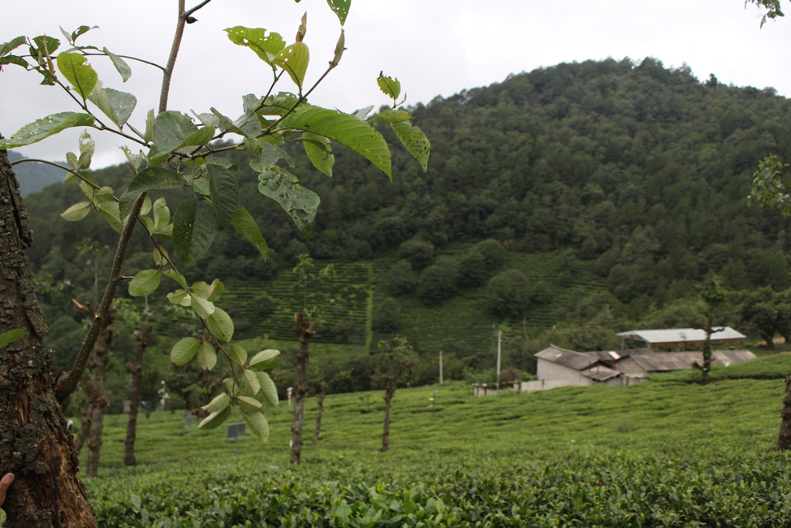
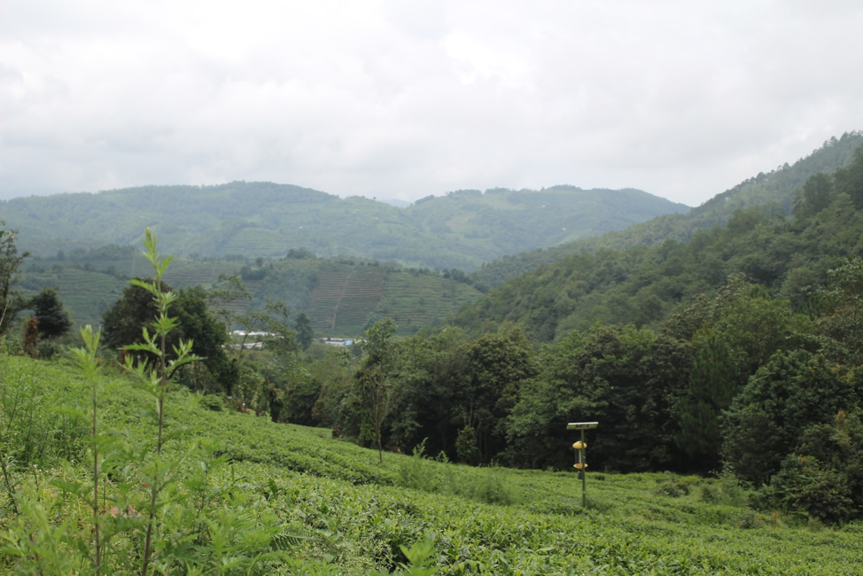
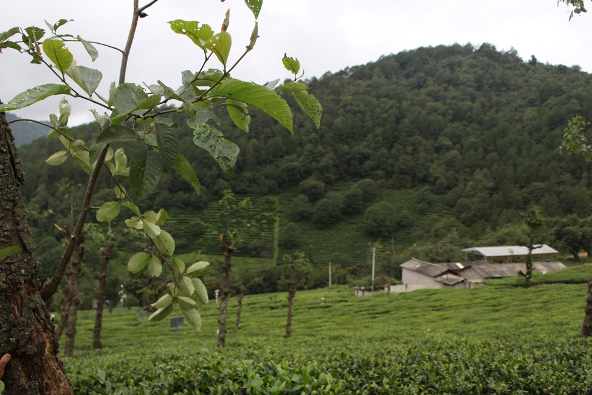
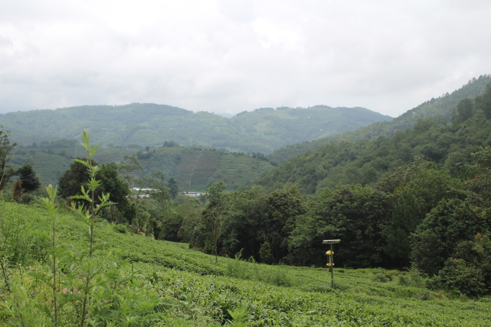
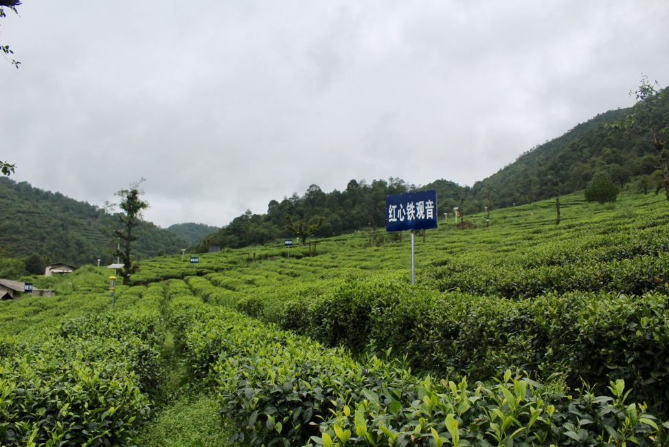
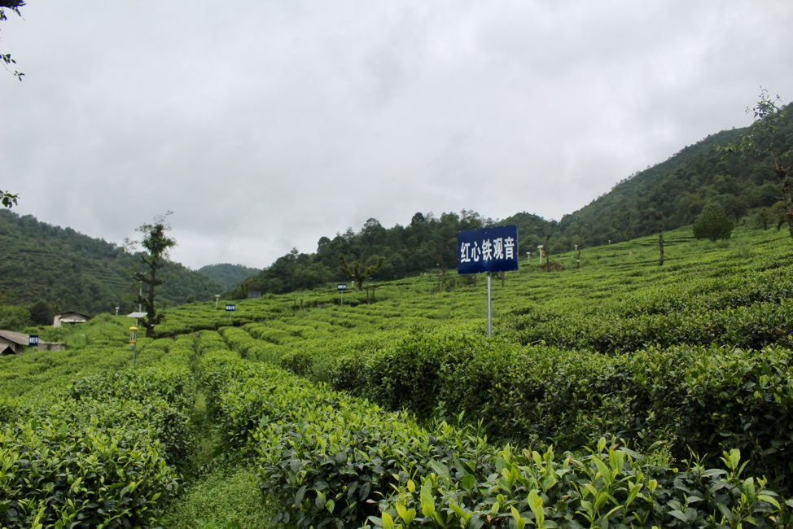
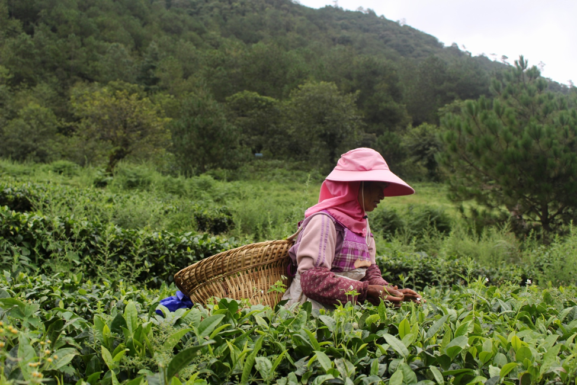

永平茶園
Tea Plantation in Yongping
離天空最近的茶園
The Tea Plantation That Touches The Sky
海拔2432.6米，被評選為2013年最美茶園 與此同時，它也是個避暑勝地。由於高海拔的關係，遊客就算夏天來也不會覺得悶熱，反而覺得涼爽舒適。
The Tea Plantation is 2432.6 metres high. It is regarded as Best Tea Plantation in 2013. Also, it is an ideal summer resort. Owing to its high altitude, the temperature is relatively low. The climate is cool and mild.
 



景色優美
The Gorgeous Scenery
夏天適逢採茶季節，茶園四處都是青青綠綠的。冬天賞雪景。
Summer is the tea picking season. You can see the lively scenery everywhere. Winter is also a lovely season to visit the Tea Plantation. The visitors can see the snowflakes drops on the tea leaves.
茶葉生產
Tea Production
盛產高山生態茶，如佛香系茶種，烏龍和鐵觀音。
The plantation is teeming with high mountain tea. For examples, Fuxiang Tea, oolong tea and Tie Guan Yin.
 


遊客可親身體驗採茶，特別是初青和盛夏.
The visitors can experience the tea picking in early Spring and Summer.
旅客亦可一邊欣賞田野風光一邊品茶。來到茶園，必定少不了買茶葉回去品嚐。由於氣候問題，長年低溫，博南山上的茶葉產量雖少但品質高， 最適合作為伴手禮，帶回家 和家人朋友一同享用。 茶種推薦：博南紅，屬於紅茶類，入口清香怡人
While drinking the tea, they can also enjoy the wonderful field scenery. Tea gift set is available for tourists to buy. Due to the extreme climate in Bonan Mountain, the low temperature limits the growth of tea. Regardless of its rare production, the quality is still distinguished. This makes the tea become a must-buy souvenir for tourists. Let’s buy the tea gift set and share with your beloved ones. Recommended tea type: Bonan Black Tea, which is a kind of Black Tea with pleasant smell.
與一般茶園不同，博南山茶園擁有獨特生態，植物種類豐富， 包括青木瓜樹和核挑等。
Unlike other tea plantation, the Tea Plantation in Bonan Mountain has an unique habitat. It has a wide variety of plants such as green papaya and walnuts.